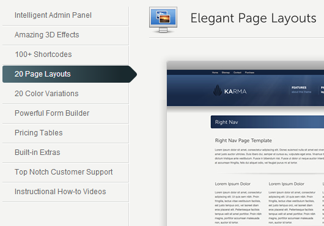

04/04/2013 @sektor5
with Franz Josef Kaiser
Before & after
How much is too much?
Dev tools → Resources:
Now: Count them …
Solution?
Can I haz more scriptz?
Of course …
jquery.flexslider-min.js
jquery.flexslidermin.js
… makes the alarm bells ring jingle bells.
Can your handheld render this?

Or one million, billion options?
# The Loop
if ( have_posts() )
{
while( have_posts() )
{
the_post();
the_title();
the_content();
}
}
Get_Ultimative_Framework::the_template();
# PHP errors error_reporting( E_ALL | E_STRICT ); @ini_set( 'display_errors', 1 ); # WordPress: DEBUG define( 'WP_DEBUG', true ); define( 'WP_DEBUG_DISPLAY', true ); define( 'SAVEQUERIES', true ); # WordPress: DEBUG (MU) define( 'DIEONDBERROR', true );
Get a dev.
Or beer.